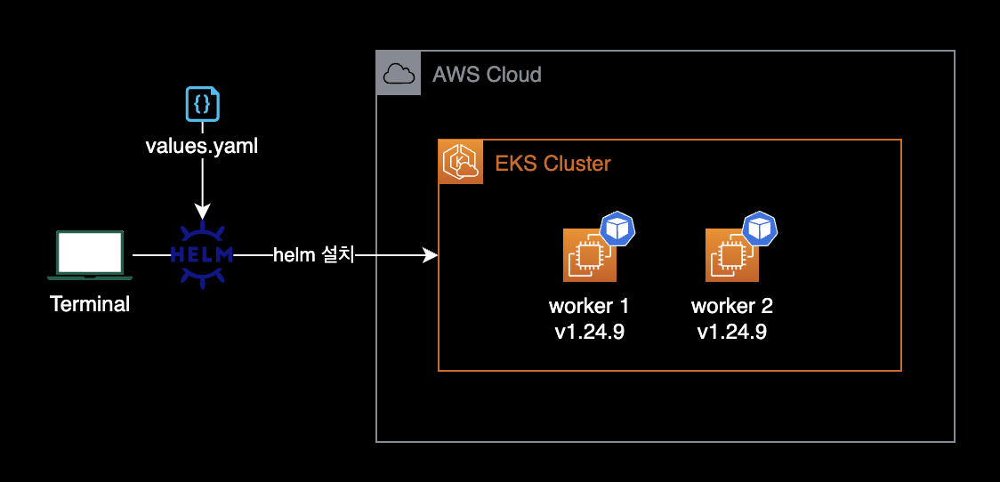

metrics-server helm
개요
EKS 클러스터에 metrics-server를 설치 및 업그레이드 가이드입니다.
이 가이드에서는 Helm v3를 사용해 metrics-server를 설치합니다.
이 가이드에서는 크게 2가지 주제를 다루고 있습니다.
- Helm 차트를 사용해서 metrics-server 설치하기
- Helm 차트를 사용해서 metrics-server 버전 업그레이드하기
환경
metrics-server를 배포할 환경은 2대의 EC2 워커노드로 구성된 EKS 클러스터입니다.

로컬 환경
- OS : macOS Ventura 13.2 (M1 Max)
- helm v3.11.0 : brew로 설치
- kubectl v1.26.1 : brew로 설치
클러스터 환경
metrics-server를 설치할 쿠버네티스 클러스터 환경은 2대의 워커노드로 구성된 EKS 클러스터입니다.
- EC2 기반의 워커노드
- 2 nodes
- x86_64
- Kubernetes v1.24 (v1.24.9-eks-49d8fe8)
설치 에드온 정보
- metrics-server v0.6.2
- 차트 버전 : v3.8.3 (2022년 12월 8일 릴리즈됨)
배경지식
metrics-server의 필요성
EKS 클러스터에서 kubectl top 명령어 실행시 아래와 같은 오류가 발생합니다.
$ kubectl top node
error: Metrics API not available
$ kubectl top pod
error: Metrics API not available
이 경우, EKS 클러스터에 metrics-server 가 미설치된 상태라 메트릭을 수집할 수 없어서 발생하는 문제입니다.
metrics-server는 크게 2가지 역할을 합니다.
- Horizontal Pod Autoscaler(HPA)가 파드를 스케일 인, 아웃 처리하기 위한 판단 기준인 파드 메트릭 수집
kubectl top명령어를 사용하기 위한 노드 메트릭 수집
버전 호환성
사용중인 Kubernetes 버전에 따라 metrics-server 버전에도 제약사항이 있습니다.
예를 들어 Kubernetes v1.19 이상 버전은 반드시 metrics-server v0.6.x를 사용해야 합니다.
자세한 사항은 metrics-server 공식문서에서 확인할 수 있습니다.
메트릭 에드온 비교
쿠버네티스 클러스터 내부의 메트릭 수집을 위한 에드온으로는 크게 2가지가 있습니다.
- kube-state-metrics
- metrics-server
이 2개의 메트릭 에드온의 차이점은 다음과 같습니다.
kube-state-metrics
kube-state-metrics는 Kubernetes API 서버를 수신하고 개체의 상태에 대한 메트릭을 생성하는 간단한 서비스입니다.
개별 Kubernetes 컴포넌트의 상태가 아니라 Deployment, Node 및 Pod와 같은 내부의 다양한 개체 상태에 중점을 둡니다.
kube-state-metrics를 사용하면 오픈소스 모니터링 툴킷인 Prometheus를 이용하여 매트릭 데이터를 수집할 수 있습니다.
metrics-server
반면에 metrics-server는 Resource Metrics API를 구현합니다.
한 문장으로 요약하면 kube-state-metrics는 모든 종류의 Kubernetes 개체에 대한 메트릭을 노출합니다. metrics-server는 노드 및 포드 사용률과 같이 Kubernetes 자체에 매우 적은 메트릭만 노출합니다. 또한, Prometheus에서 metrics-server를 직접 스크랩할 수 없습니다.
이미 다른 유저가 이에 대해 질문한 깃허브 이슈가 있습니다.
자세한 설명은 Differences between metrics-server repo and kube-state-metrics repo #55 이슈를 참고 부탁드립니다.
metrics-server 설치
helm 세팅
클러스터 안에 metrics-server 파드가 존재하는 지 확인합니다.
$ kubectl get pod -n kube-system
NAME READY STATUS RESTARTS AGE
aws-load-balancer-controller-77fffd87bc-79mwd 1/1 Running 0 7h53m
aws-load-balancer-controller-77fffd87bc-hxtfq 1/1 Running 0 7h53m
aws-node-bllwq 1/1 Running 0 9h
aws-node-zhlxf 1/1 Running 0 9h
coredns-dc4979556-bps74 1/1 Running 0 7h53m
coredns-dc4979556-w58mt 1/1 Running 0 7h53m
ebs-csi-controller-84b55655df-2pr5r 6/6 Running 0 7h52m
ebs-csi-controller-84b55655df-n8pj4 6/6 Running 0 7h53m
...
위와 같은 경우 설치되지 않았다고 판단할 수 있습니다.
헬름 레포를 추가합니다.
$ helm repo add metrics-server https://kubernetes-sigs.github.io/metrics-server/
"metrics-server" has been added to your repositories
등록된 헬름 레포 목록을 확인합니다.
$ helm repo list
NAME URL
metrics-server https://kubernetes-sigs.github.io/metrics-server/
metrics-server 레포가 새롭게 추가된 걸 확인할 수 있습니다.
values.yaml 작성
metrics-server의 원본 values.yaml을 자신의 환경에 맞게 수정합니다.
# Default values for metrics-server.
# This is a YAML-formatted file.
# Declare variables to be passed into your templates.
image:
repository: registry.k8s.io/metrics-server/metrics-server
# Overrides the image tag whose default is v{{ .Chart.AppVersion }}
tag: ""
pullPolicy: IfNotPresent
imagePullSecrets: []
# - name: registrySecretName
nameOverride: ""
fullnameOverride: ""
serviceAccount:
# Specifies whether a service account should be created
create: true
# Annotations to add to the service account
annotations: {}
# The name of the service account to use.
# If not set and create is true, a name is generated using the fullname template
name: ""
# The list of secrets mountable by this service account.
# See https://kubernetes.io/docs/reference/labels-annotations-taints/#enforce-mountable-secrets
secrets: []
rbac:
# Specifies whether RBAC resources should be created
create: true
pspEnabled: false
apiService:
# Specifies if the v1beta1.metrics.k8s.io API service should be created.
#
# You typically want this enabled! If you disable API service creation you have to
# manage it outside of this chart for e.g horizontal pod autoscaling to
# work with this release.
create: true
# Annotations to add to the API service
annotations: {}
# Specifies whether to skip TLS verification
insecureSkipTLSVerify: true
# The PEM encoded CA bundle for TLS verification
caBundle: ""
commonLabels: {}
podLabels: {}
podAnnotations: {}
podSecurityContext: {}
securityContext:
allowPrivilegeEscalation: false
readOnlyRootFilesystem: true
runAsNonRoot: true
runAsUser: 1000
priorityClassName: system-cluster-critical
containerPort: 10250
hostNetwork:
# Specifies if metrics-server should be started in hostNetwork mode.
#
# You would require this enabled if you use alternate overlay networking for pods and
# API server unable to communicate with metrics-server. As an example, this is required
# if you use Weave network on EKS
enabled: false
replicas: 2
updateStrategy: {}
# type: RollingUpdate
# rollingUpdate:
# maxSurge: 0
# maxUnavailable: 1
podDisruptionBudget:
# https://kubernetes.io/docs/tasks/run-application/configure-pdb/
enabled: false
minAvailable:
maxUnavailable:
defaultArgs:
- --cert-dir=/tmp
- --kubelet-preferred-address-types=InternalIP,ExternalIP,Hostname
- --kubelet-use-node-status-port
- --metric-resolution=15s
args: []
livenessProbe:
httpGet:
path: /livez
port: https
scheme: HTTPS
initialDelaySeconds: 0
periodSeconds: 10
failureThreshold: 3
readinessProbe:
httpGet:
path: /readyz
port: https
scheme: HTTPS
initialDelaySeconds: 20
periodSeconds: 10
failureThreshold: 3
service:
type: ClusterIP
port: 443
annotations: {}
labels: {}
# Add these labels to have metrics-server show up in `kubectl cluster-info`
# kubernetes.io/cluster-service: "true"
# kubernetes.io/name: "Metrics-server"
addonResizer:
enabled: false
image:
repository: registry.k8s.io/autoscaling/addon-resizer
tag: 1.8.14
resources:
limits:
cpu: 40m
memory: 25Mi
requests:
cpu: 40m
memory: 25Mi
nanny:
cpu: 20m
extraCpu: 1m
extraMemory: 2Mi
memory: 15Mi
minClusterSize: 10
pollPeriod: 300000
threshold: 5
metrics:
enabled: false
serviceMonitor:
enabled: false
additionalLabels: {}
interval: 1m
scrapeTimeout: 10s
metricRelabelings: []
relabelings: []
# See https://github.com/kubernetes-sigs/metrics-server#scaling
resources: {}
extraVolumeMounts: []
extraVolumes: []
nodeSelector: {}
tolerations: []
affinity: {}
topologySpreadConstraints: []
# Annotations to add to the deployment
deploymentAnnotations: {}
schedulerName: ""
기본적으로 metrics-server 컨테이너 이미지를 외부에서 받아오도록 설정되어 있습니다.
아래는 metric-server 헬름 차트에서 이미지 받아오는 경로에 대한 설정 부분입니다.
# values.yaml
...
image:
repository: registry.k8s.io/metrics-server/metrics-server
# Overrides the image tag whose default is v{{ .Chart.AppVersion }}
tag: ""
pullPolicy: IfNotPresent
...
위와 같이 기본값을 사용해서 metrics-server 헬름 차트를 설치하는 경우 워커 노드들이 NAT Gateway, Internet Gateway를 통해 도커 허브에 액세스 가능한 상태여야 정상적으로 파드 배포가 완료됩니다.
일반적으로 도커 허브에 업로드된 metrics-server 컨테이너 이미지를 받아오는 대신 Private ECR에 업로드해서 운영하는 걸 권장합니다.
제 경우 기본 차트의 values.yaml 파일에서 고가용성을 위해 아래와 같이 replicas 값만 1에서 2로 변경했습니다.
# values.yaml
...
replicas: 2
...
metrics-server 설치
values.yaml 파일과 같은 경로로 이동합니다.
$ tree
.
└── values.yaml
1 directory, 1 files
최신 버전의 헬름 차트를 사용해서 metrics-server를 설치합니다.
$ helm upgrade \
--install metrics-server metrics-server/metrics-server \
--namespace kube-system \
--values values.yaml \
--wait
metrics-server 관련 쿠버네티스 리소스는 kube-system 네임스페이스에 설치되어야 합니다.
헬름 설치 후 차트의 배포 상태를 확인합니다.
$ helm status metrics-server -n kube-system
NAME: metrics-server
LAST DEPLOYED: Wed Feb 8 23:49:39 2023
NAMESPACE: kube-system
STATUS: deployed
REVISION: 1
TEST SUITE: None
NOTES:
***********************************************************************
* Metrics Server *
***********************************************************************
Chart version: 3.8.3
App version: 0.6.2
Image tag: registry.k8s.io/metrics-server/metrics-server:v0.6.2
***********************************************************************
클러스터에 배포된 metrics-server 관련 Deployment, Pod 등의 전반적인 상태도 확인합니다.
$ kubectl get all \
-l app.kubernetes.io/instance=metrics-server \
-n kube-system
NAME READY STATUS RESTARTS AGE
pod/metrics-server-6c968cf978-hgfx4 1/1 Running 0 38m
pod/metrics-server-6c968cf978-qks6l 1/1 Running 0 38m
NAME TYPE CLUSTER-IP EXTERNAL-IP PORT(S) AGE
service/metrics-server ClusterIP 172.20.142.97 <none> 443/TCP 38m
NAME READY UP-TO-DATE AVAILABLE AGE
deployment.apps/metrics-server 2/2 2 2 38m
NAME DESIRED CURRENT READY AGE
replicaset.apps/metrics-server-6c968cf978 2 2 2 38m
위와 같은 경우 정상적이라고 판단할 수 있습니다.
metrics-server 파드는 Deployment에 의해 항상 동일한 개수를 유지됩니다.
위의 경우는 2개의 metrics-server 파드를 항상 유지합니다.
┌───────────────────────────────────────────────────┐
│ │
│ ┌───────┐ │
│ Example of Deployment and Pod │ │ │
│ ───────────────────────────── ┌─►│ Pod 1 │ │
│ │ │ │ │
│ │ └───────┘ │
│ │ │
│ ┌────────────┐ ┌────────────┐ │ ┌───────┐ │
│ │ │ │ │ │ │ │ │
│ │ Deployment ├────►│ ReplicaSet ├──┼─►│ Pod 2 │ │
│ │ │ │ │ │ │ │ │
│ └────────────┘ └────────────┘ │ └───────┘ │
│ │ │
│ │ ┌───────┐ │
│ │ │ │ │
│ └─►│ Pod 3 │ │
│ │ │ │
│ └───────┘ │
│ │
└───────────────────────────────────────────────────┘
결과 확인
metrics-server를 설치한 후 kubectl top node, kubectl top pod 명령어가 정상적으로 실행되는 지 확인합니다.
$ kubectl top node
NAME CPU(cores) CPU% MEMORY(bytes) MEMORY%
ip-10-xxx-xxx-xxx.ap-northeast-2.compute.internal 54m 2% 835Mi 25%
ip-10-xxx-xxx-xxx.ap-northeast-2.compute.internal 69m 3% 2248Mi 67%
$ kubectl top pod
NAME CPU(cores) MEMORY(bytes)
httpbin-648cd984f8-8ttfz 1m 36Mi
이제 metrics-server를 통해 받아온 워커노드와 파드의 리소스 메트릭이 출력됩니다.
이것으로 설치 가이드를 마칩니다.
metrics-server 업그레이드
이 시나리오는 Helm v3를 사용해서 기존에 설치된 metrics-server를 버전 업그레이드합니다.
- 헬름 차트 : 3.8.3 → 3.9.0
- metrics-server 앱 : v0.6.2 → v0.6.3
metrics-server의 ArtifactHUB를 확인한 후 업그레이드할 차트 버전을 지정합니다.
$ CHART_VERSION='3.9.0'
중요
헬름 차트의 릴리즈 노트를 통해 변경사항을 체크하고 values.yaml을 업데이트한 후 저장합니다.
헬름 차트로 metrics-server를 버전 업그레이드합니다.
# metrics-server 공식 헬름 차트 추가
$ helm repo add metrics-server https://kubernetes-sigs.github.io/metrics-server/
# metrics-server 버전 업그레이드
$ helm upgrade \
--install metrics-server metrics-server/metrics-server \
-f values.yaml \
-n kube-system \
--version $CHART_VERSION \
--wait
metrics-server 파드가 교체되는 데 시간이 걸리므로 잠시 기다립니다.
Release "metrics-server" has been upgraded. Happy Helming!
NAME: metrics-server
LAST DEPLOYED: Sun Apr 2 22:14:38 2023
NAMESPACE: kube-system
STATUS: deployed
REVISION: 7
TEST SUITE: None
NOTES:
***********************************************************************
* Metrics Server *
***********************************************************************
Chart version: 3.9.0
App version: 0.6.3
Image tag: registry.k8s.io/metrics-server/metrics-server:v0.6.3
***********************************************************************
helm upgrade 명령어의 실행 결과에서 새로운 버전의 Chart version, App version 정보가 출력되는 지 확인합니다.
metrics-server 파드가 사용할 이미지 태그 값은 기본적으로 차트의 App version 값으로 오버라이딩되어 적용됩니다.
아래는 metrics-server의 values.yaml 파일 내용입니다.
# Default values for metrics-server.
# This is a YAML-formatted file.
# Declare variables to be passed into your templates.
image:
repository: registry.k8s.io/metrics-server/metrics-server
# Overrides the image tag whose default is v{{ .Chart.AppVersion }}
tag: ""
pullPolicy: IfNotPresent
...
헬름 차트 배포 상태와 metrics-server 관련 리소스의 전반적인 상태를 확인합니다.
$ helm status metrics-server \
-n kube-system \
--show-resources
관련자료
metrics-server
공식 깃허브
metrics-server values.yaml
metrics-server 헬름차트에서 사용하는 values.yaml 파일
ArtifactHUB - metrics-server
공식 차트가 업로드된 ArtifactHub